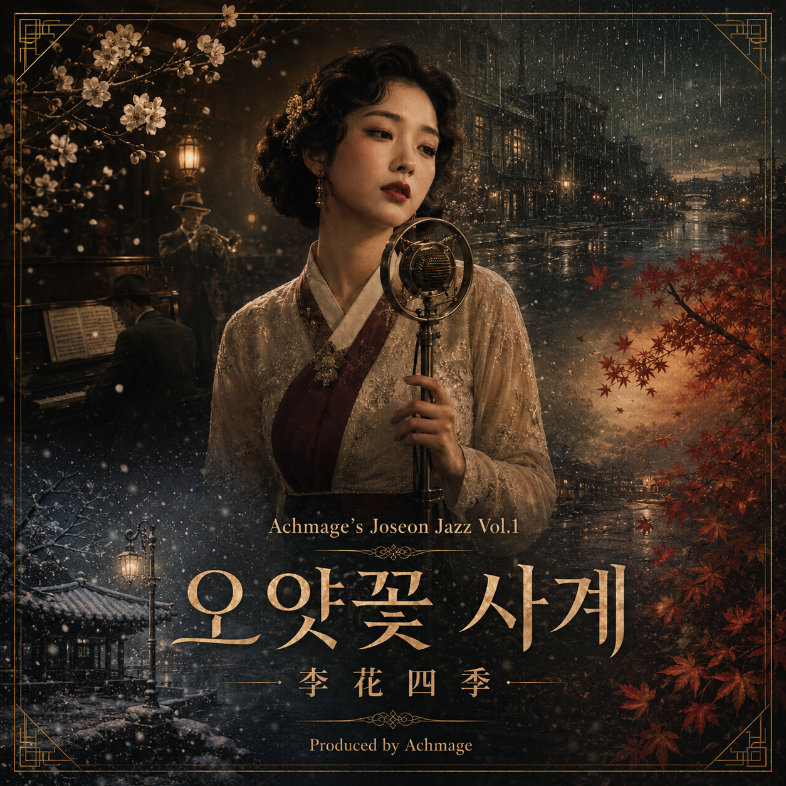

Achmage's Joseon Jazz Vol.1
오얏꽃 사계 李花四季
사라진 나라를 향한 네 계절
1930년대 경성의 재즈 카바레. 한 여가수가 사계를 통과하며 부르는 열다섯 곡. 표면은 사랑의 사계절 연가, 그 속은 잃어버린 나라를 향한 네 계절의 애도다. 순사는 술집의 이별가로 듣고, 대한제국을 기억하는 이들은 망국가로 듣는다.
TRACKS
◆ 十五曲 ◆
앨범 모티프
같은 말이 두 갈래로 — 겉과 속이 함께 흐르는 암호어.
ABOUT
「오얏꽃 사계」는 조선 재즈 — 서양 재즈악기(피아노·트럼펫·클라리넷)와 한국 전통악기(가야금·해금·대금)를 엮은 1930년대 경성 카바레 양식으로 빚었습니다. 서양 악기는 무대 위 표층을, 한국 악기는 그 아래 은닉된 정체성을 연주합니다.
모든 가사는 정치적 단어를 한 번도 쓰지 않습니다. 대신 님·오얏꽃·붉은 실 푸른 실·등불·향 같은 말이 사랑과 망국, 두 문맥에서 동시에 성립하도록 설계되었습니다. 봄에서 다시 봄으로 돌아오는 사계의 순환이 곧 흥망과 회생의 곡선입니다.
곡은 Suno 5.5로 생성했고, 작사·편곡 설계는 Achmage OS의 joseon-jazz-album 스킬로 한 앨범 단위로 구성했습니다.
— Produced by Achmage